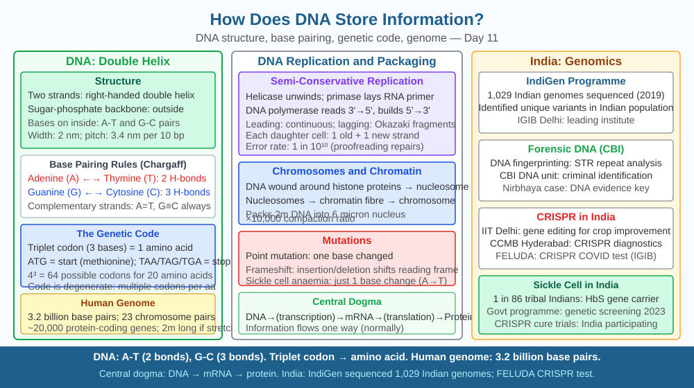

By the end of this lesson, you should be able to explain how DNA encodes genetic information using base sequences, name the four nitrogenous bases and their pairing rules, and predict what a single base mutation does to a protein.
Inside almost every cell in your body sits a molecule so thin it is invisible even under a normal microscope, yet it contains the complete set of instructions to build and run an entire human being. If you stretched the DNA from a single human cell into a straight line, it would measure roughly 2 metres. Coiled and packed into a nucleus just 6 micrometres wide. The real puzzle is not the size — it is: how can a single molecule encode billions of specific instructions without getting them mixed up?
DNA stands for deoxyribonucleic acid. It is a double-stranded polymer made of repeating units called nucleotides. Each nucleotide has three parts: a deoxyribose sugar, a phosphate group, and one of four nitrogenous bases — adenine (A), thymine (T), guanine (G), and cytosine (C). The two strands twist around each other to form the famous double helix, first described by Watson and Crick in 1953 using X-ray data from Rosalind Franklin.
The information is stored entirely in the sequence of bases along one strand. Think of it as a four-letter alphabet used to write a very long sentence. Just as 26 English letters can encode every word in a dictionary, four bases — arranged in different orders — can encode every gene in every living organism.
The specific rule governing which bases pair across the two strands is called complementary base pairing: A always pairs with T (held by two hydrogen bonds), and G always pairs with C (held by three hydrogen bonds). This rule is why both strands carry equivalent information — if you know the sequence of one strand, you can reconstruct the other exactly.
A gene is a specific stretch of this base sequence — typically hundreds to thousands of base pairs long — that encodes the instructions for making one functional molecule, usually a protein. The human genome contains approximately 3.2 billion base pairs arranged across 23 pairs of chromosomes, encoding around 20,000–25,000 genes.
Information is read in groups of three consecutive bases called codons. Each codon specifies one amino acid (or a stop signal). Since there are 4 × 4 × 4 = 64 possible codons but only 20 amino acids, the code is degenerate — multiple codons can specify the same amino acid, giving DNA a built-in error-buffering capacity.
When a cell needs to use the information in a gene, a molecular machine called RNA polymerase reads the base sequence and transcribes it into messenger RNA (mRNA). The mRNA carries the codon sequence to the ribosomes where proteins are assembled — but that is the story of the next lesson.
The critical point for today: information in DNA is chemical, not electrical, not shape-based. It is the precise linear sequence of A, T, G, C bases along the sugar-phosphate backbone that encodes every inherited characteristic, from blood group to eye colour to susceptibility to certain diseases.
Think of DNA as a message written in a four-letter alphabet, packed into a two-stranded zip:
Remove any base or change its identity and you alter the message — sometimes harmlessly, sometimes catastrophically.
The included SVG shows a short stretch of the double helix unwound flat for clarity:

The base-sequence mechanism of DNA storage has direct medical and technological consequences:
Q3 established that a single base change can alter one amino acid in a protein. Now push further: the genetic code is degenerate — multiple codons specify the same amino acid. For example, both GGU and GGC code for glycine.
Predict: If a mutation changes the third base of a codon from U to C, but the amino acid specified remains the same (a so-called "silent" or synonymous mutation), would this always have no effect on the organism? Consider whether there are any cellular processes — beyond which amino acid is inserted — that depend on the exact base sequence of codons. Give a reasoned answer.
How does DNA store genetic information?
Correct answer: c
Why is understanding the base-sequence mechanism of DNA storage more useful than just knowing DNA exists?
Correct answer: c
What would happen if a single base in a critical gene were changed by mutation?
Correct answer: b
Explain today's concept to a younger student in 60 seconds without technical jargon. Then explain it again using the correct scientific vocabulary.
If both explanations describe the same mechanism, you have understood the concept rather than memorised it.
The four-base DNA code is shared by every living thing on Earth — from the bacterium in your gut to a banyan tree in Bengaluru to the blue whale. The codon GUG specifies the amino acid valine in a bacterium and in a human brain cell. This universal code is one of the strongest pieces of evidence that all life on Earth descended from a common ancestor roughly 3.5–4 billion years ago. The same molecule, the same four letters, the same dictionary.
DNA stores all genetic information as a precise linear sequence of four chemical bases — A, T, G, and C — where every triplet of bases (codon) specifies one amino acid, so even a single base change can alter a protein and cause disease.